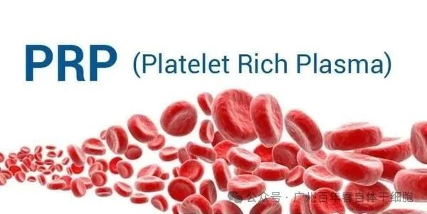
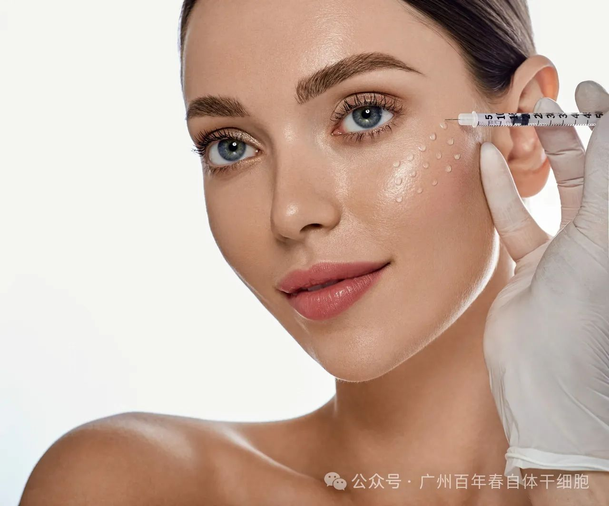
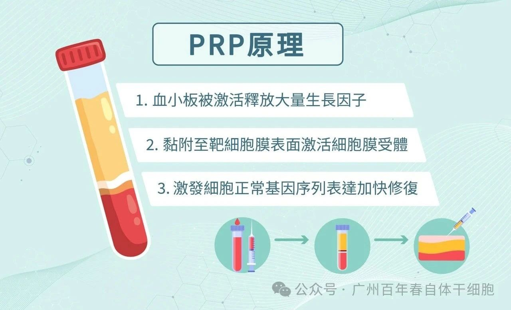
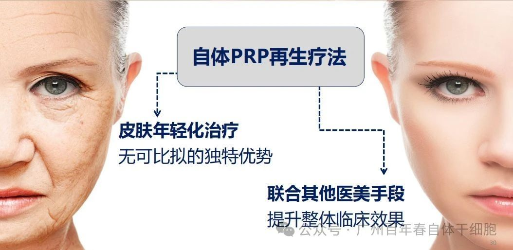
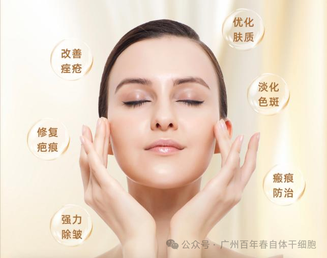

About Us
关于百年春


很多美女们是不是都好奇过一个问题：为什么明星年纪大了看起来还是那么年轻？通常大家都知道他们整醒了，一定整了！其实不然，他们用了PRP自体血清注射回春术。

PRP中含有纤维连接蛋白和纤粘蛋白。纤维连接蛋白是一种大分子糖蛋白，具有多种生物活性，能促进细胞的黏连生长。而细胞的黏连是机体结构得以维持、细胞生长完成的必要条件。
还可以利于上皮细胞的迁移和增殖来修复伤口，能对改善外周血管及肺部功能起到积极作用。基于纤维连接蛋白的这些功能，PRP能够促进细胞的更替，从而从根本上解决了因细胞衰弱，老化，缺水等原因造成的皱纹和疤痕，也解决了皮肤的毛孔粗大以及肌肤组织缺失的问题。


6、PRP注射能达到什么效果？
扫码关注
上一篇：
下一篇：
别等身体亮红灯！百年春自体干细胞，为您定制细胞级抗衰防线
2026-03-04
健康投资：2026年个人健康管理为何选择百年春自体干细胞
2026-02-10
卵巢功能“逆袭”奇迹：百年春自体干细胞靶向回输，让AMH值从0.01飙到1.01
2026-02-09
肺部再生，呼吸新生！百年春自体干细胞治疗肺炎、肺纤维化
2026-02-08
香港人才管理协会走进百年春：共探再生医学新未来，开启生命科技新篇章
2026-02-06